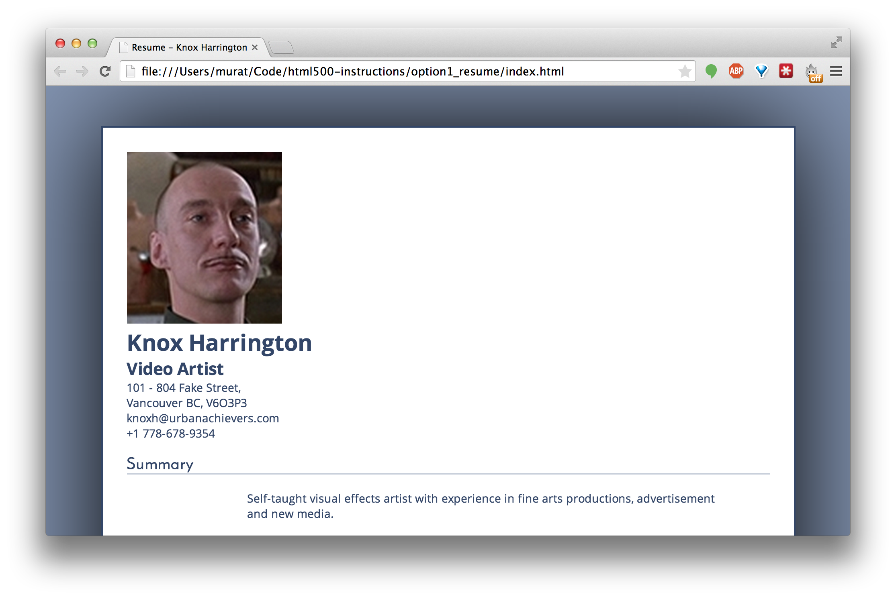

Welcome to your HTML500 Intro to HTML/CSS Assignment.
In this project, you'll be setting up a simple webpage that will be displaying a resume, your own or a silly fictional one (the choice is yours, and the options are endless!).
Please download and install Brackets, a popular yet super simple code editor used by software developers: Download Brackets
Follow the below step-by-step instructions to get building your first ever webpage.
You can view the completed version to see what we will be building. (You can maybe even cheat a little!)
Let's begin with creating some content. It's always easier to build and design around the content.
html500/option1_resume/index.html within Brackets. It's best if you open the entire option1_resume folder. You can use the File »» Open Folder option from the menu bar to accomplish this. Brackets will treat the folder as a Project and let you switch between the different files easier.
Now let's add some HTML markup to our text content. The steps below will guide you through adding HTML "tags", which *always* appear inside < and > signs.
doctype, html, head and body:
<!doctype html>
<html>
<head>
</head>
<body>
Knox Harrington
Video Artist
...
(Your text content goes in body.
This section is indented twice.)
</body>
</html>
Wrap the existing content within the body opening and closing tags and indent it (highlight the line(s) + hit the tab key). The reason for indenting our code is soley to keep your nested layout easily comprehensible to the human eye.
head section, let's add the title of the page to the title tag. This can be whatever you want, but should be directly related to the content of the page. For example, "My resume". You will notice it show up as the title on your browser window or tab, and does not affect the actual contents of the page.
<!doctype html>
<html>
<head>
<title>My resume<title>
</head>
...
We are ready to add the markup to our text content now. Initially, we will only make use of a few HTML tags: h1 for the main title, h2 through h4 for sub section titles, p for paragraphs, and then ul and ol for lists.
Note that each of these tags have an opening tag (such as <h1>), and a closing tag (such as </h1>) wrapping the text they are supposed to apply styling to.
h1 tag. Similarly, the person's title will be h2.
...
<body>
<h1>Knox Harrington</h1>
<h2>Video Artist</h2>
101 - 804 Fake Street,
Vancouver BC, V6O3P3
...
Let's save the index.html file, and open it in your browser in order to view it as a web page instead of just code. You can double-click the file from Finder / Windows Explorer to have it open in your default browser. In the browser, you will see the address and remaining content show up without line breaks, looking "broken".
This is because whitespace in HTML is ignored, new lines must be explicitly coded in. So let's fix the address layout. A new line tag is a single, self-closing br. Because this tag doesn't need any content within it, it's self-closing and doesn't need a closing </br> tag to accompany it.
...
<h2>Video Artist</h2>
101 - 804 Fake Street,<br />
Vancouver BC, V6O3P3<br />
knoxh@urbanachievers.com<br />
+1 778-678-9354<br />
...
The subsections will be h3, and the paragraphs will be p tags. These are not exact requirements, but what's important is to pick which element will take which tags, and stay consistent with it.
Example:
...
<h3>Summary</h3>
<p>Self-taught visual effects artist with experience in fine arts productions, advertisement and new media. Previously having worked in marketing and sales, I am currently looking to bring my creative outlook and technical finesse into companies who use video to promote businesses, products or artists.</p>
...
ul tag. For ordered lists with numbers, ol. Inside the list, each list item is wrapped in li tags.
...
<h3>Skills</h3>
<ul>
<li>2d and 3d rendering</li>
<li>Texturing</li>
<li>Compositing</li>
<li>On-set supervision</li>
<li>Color grading</li>
<li>Motion graphics design</li>
</ul>
...
Feel free to choose which parts of the content you'd like to display in list form and edit to your taste.
ol and li's.), with titles (h5), and description paragraphs (p).
...
<ol>
<li>
<h5>Disney - The Lion King (1994)</h5>
<p>Worked on keying, rotoscoping and compisiting the promo trailer</p>
</li>
<li>
<h5>Valve - Half Life (1998)</h5>
<p>3d Character design and ragdoll animations</p>
</li>
...
</ol>
...
By this point, you should be able to load your index.html in the browser again, and see what kind of default styling these HTML tags added to your content. The titles look like titles, and lists act like lists.
Although browsers provide this default appearance, we are free to change the styling of these elements as we like, which will be discussed in the next section.
Congrats, you're all done adding basic markup to your content. You may notice that this page is rather... bland. CSS is the language used for styling HTML, so we will be writing some CSS. The first step is to add the link tag within the head of the index of the 'index.html' file. It should look like:
<link rel="stylesheet" href="resume.css">This will link the CSS to the page, where we can make things look prettier.
CSS statements are made of two parts: the element selector that the styling should apply to, and then the style attributes inside the curly braces.
html, body {
margin: 0;
}
body {
background: #CCDCE4;
padding: 20px;
color: #222;
font-family: "Helvetica", "Arial", sans-serif;
}
Now let's center the content so it doesn't reach to the far left and right sides of your browser window.
To do this, we will need to go back to the HTML file, and wrap all your content in a new element to group them together. Let's use the div tag. Div stands for division. It is an HTML element that has no default styling, so we will need to use our own CSS for it. Let's also add an ID to it, so we can reference it from our CSS.
...
<body>
<div id="resume">
<h1>Knox Harrington</h1>
<h2>Video Artist</h2>
...
</div>
</body>
</html>
Note that all the content has been indented one more time, since there is another wrapping element (the div) now.
If you view your page now, it will not look any different, because no CSS has been added to our new div. So let's add the CSS below to the end of the resume.css file. (Ignore the "...")
...
#resume {
width: 800px;
margin: 50px auto;
}
Now you should be able to see the changes reflected in your browser. Notice the blank space on the sides. If your browser window is small, you may have to expand it to see the change.
Here are some more stylings done below. They will demonstrate some more features such as borders, font sizes, etc. You may place them at the end of your CSS file.
...
h3 {
border-bottom: 2px solid #000;
font-size: 20px;
}
h5 {
margin: 0;
padding: 0;
}
h1, h2 {
margin: 0;
padding: 0;
}
ul {
list-style: none;
}
li {
margin: 2px 0 5px 0;
}
ul, ol {
padding: 0;
}
Now that we have the basics down, it's time to make our resume look professional with some more advanced styling.
#resume section of our CSS with the following:
#resume {
position: relative;
width: 800px;
margin: 50px auto;
padding: 30px;
background: #fff;
border: 2px solid #334668;
box-shadow: 0 0 300px #000;
}
It's amazing what good fonts can do to your design. Google Web Fonts is an excellent resource for finding and using free fonts on your website. Open Sans and Josefin Sans seem like decent enough fonts for a handsome resume.
You can add Google Web fonts to your page by adding these two lines to your <head> section:
...
<head>
<title>Resume - Knox Harrington</title>
<link rel="stylesheet" type="text/css" href="resume.css">
<link href='http://fonts.googleapis.com/css?family=Josefin+Sans' rel='stylesheet' type='text/css'>
<link href='http://fonts.googleapis.com/css?family=Open+Sans:400,700' rel='stylesheet' type='text/css'>
</head>
Replace the body CSS with the following:
body {
color: #334668;
background: #8394B1;
font-family: "Open Sans", "Helvetica", "Arial", sans-serif;
font-size: 14px;
text-shadow: 0px 1px 0 #fff;
}
And the h3 CSS with:
h3 {
border-bottom: 2px solid #C9D0DB;
font-family: "Josefin Sans";
font-size: 20px;
}
Observe the CSS statements we added, and feel free to mess around with them.
Another easy way to make things look professional is making good use of whitespace! Now let's add some blank space to the left side of each section, so the titles pop out a little more. To do this, we will need to wrap each bit that we want shifted in an HTML tag.
The section tag should be a good option, since what we will be refering to are essentially sections of the resume. Refer to the screenshot below to see what we mean by "wrapping" in the section tag.
To keep things nice and readable, make sure the now-wrapped content to be indented.
Once you add the following CSS for the sections, we should see the improved layout:
section {
margin-left: 150px;
margin-right: 50px;
}
Time to add a photo to the resume. If you've made it this far, you likely have a face, so feel free to use a picture of your own instead of the example provided.
Start by adding an img tag before the main title referring to the location of the image:
<img id='headshot' src='images/knox.png' />It's probably easiest to place your own picture in the same folder, and fix the filename from knox.png to your own. 
Add the following CSS to give it some styling, and to make it align itself to the left side, pushing the titles over to the right. This is a result of the CSS property float: left;
img#headshot {
float: left;
height: 150px;
margin-right: 20px;
margin-bottom: 20px;
padding: 5px;
border: 2px solid #C9D0DB;
}
We can also make the contact info align to the right side by wrapping it in its own HTML element and making it float: right;
Let's use the address element, which is available in HTML5. If we want it to appear at the very top left side, it's best to put it before the title. Refer to the screenshot below to see what that means, and also add the CSS statements.
address {
float: right;
}
Notice how the address is now italic. This is due to the default styling browsers apply to the address element.
Some resumes make use of visual indicators to convey how experienced the person is with their skills. We will make it look like the screenshot below.
We will make use of nested span tags to achieve this effect.
Add the following tags to your "Tools" list, paying close attention to the class and style attributes:
And as usual, add the css:
.meter {
display: inline-block;
width: 100px;
height: 7px;
border: 1px solid #334668;
margin-right: 5px;
}
.meter span {
display: block;
height: 7px;
background: #334668;
}
In your HTML markup, you can adjust the percentage numbers used in the style attributes to change the length of the bars.
This instruction guide was also made with HTML and CSS! (and a little bit of JavaScript for the interactivity, which we haven't covered in this guide.)
Go ahead and (right click and) view the page source to check out how it was done!